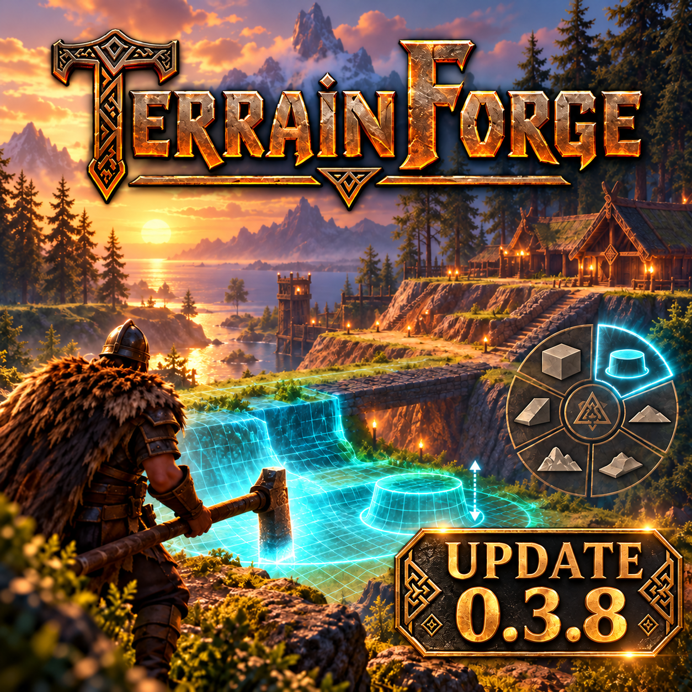
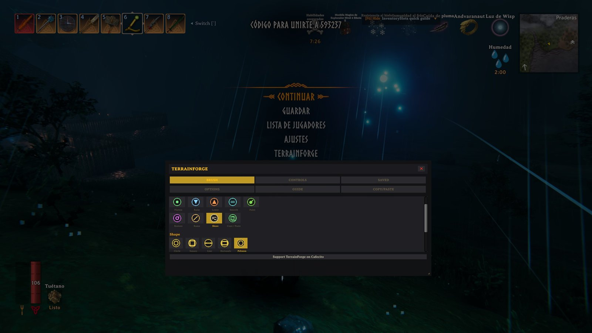
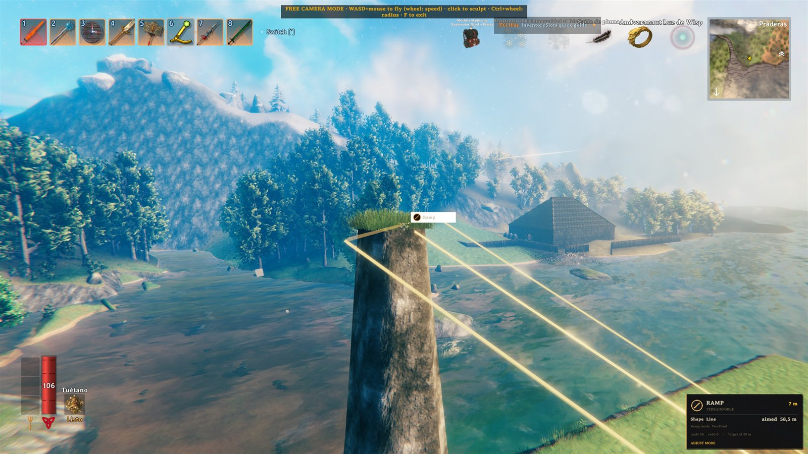
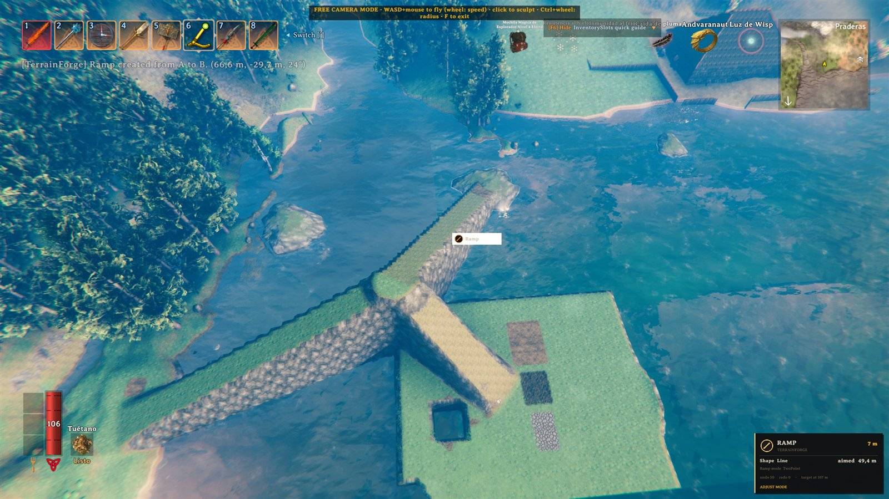
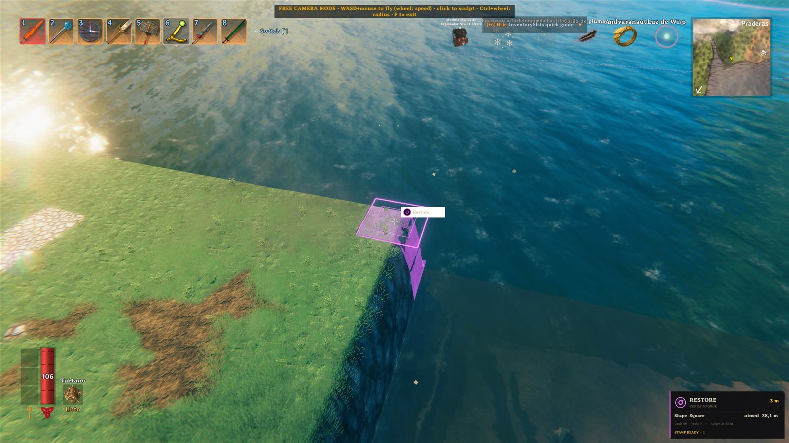

Esculpí con libertad
Aplaná, elevá, bajá y suavizá. Trazá rampas y costas, pintá o restaurá con nueve modos y cinco formas. Copiar/Pegar tiene su propio modo; la nieve se elige dentro de Pintar.
UN MOD DE VALHEIM · HOTFIX 0.3.8 · VALIDACIÓN PENDIENTE
Una brocha libre para levantar montañas, trazar caminos, crear costas y dar forma a cada rincón de Valheim.
Descarga gratis · Para redistribuirlo o publicar modificaciones, pedí permiso al autor.
Requiere BepInEx 5 · Instalalo en cliente y servidor
HERRAMIENTAS PARA CONSTRUIR A TU ESCALA
TerrainForge supera los límites de las herramientas vanilla. Trabajá con precisión sobre grandes superficies y convertí tus ideas en terreno real, tanto en solitario como en multijugador.
Aplaná, elevá, bajá y suavizá. Trazá rampas y costas, pintá o restaurá con nueve modos y cinco formas. Copiar/Pegar tiene su propio modo; la nieve se elige dentro de Pintar.
Seleccioná el terreno con rectángulos, líneas, polígonos o la forma de la brocha. Vista previa, deshacer/rehacer y snapshots para trabajar con control.
Perfiles, menú radial, ajustes en vivo y 14 idiomas con detección automática. La herramienta se adapta a vos.
TERRAINFORGE EN VALHEIM
El arte de la actualización 0.3.8 y capturas reales de las herramientas en juego.





GUÍA COMPLETA DEL MOD
Instalación, controles y ayuda para cada herramienta. Elegí entre los 14 idiomas del manual.
El manual de esta web se sincroniza automáticamente con la wiki de GitHub.
TU PRÓXIMO MUNDO EMPIEZA ACÁ